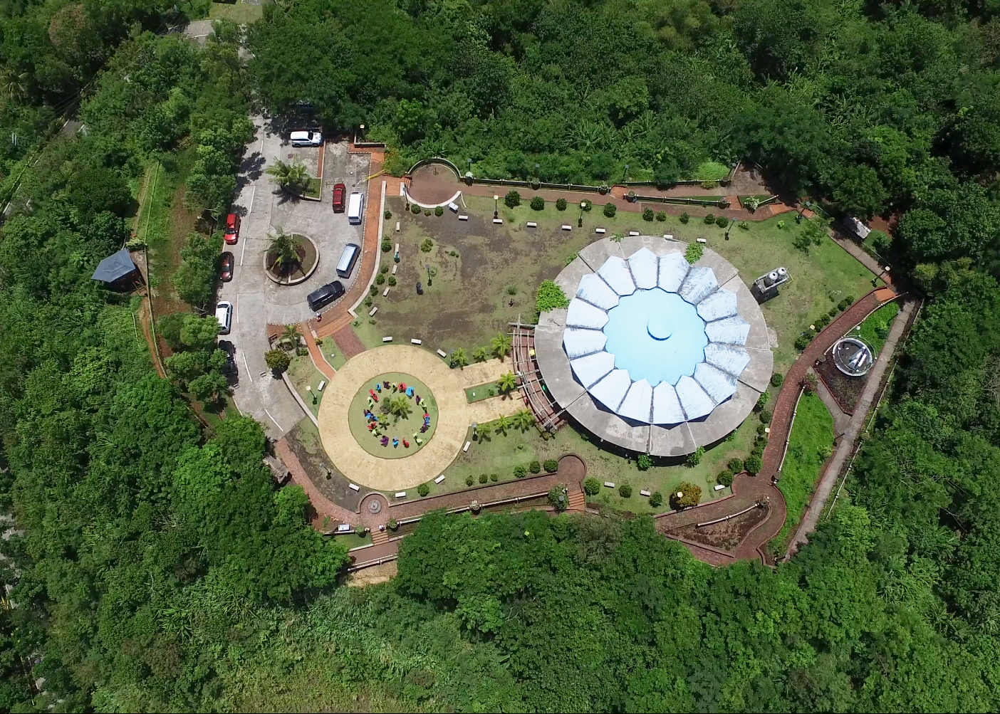
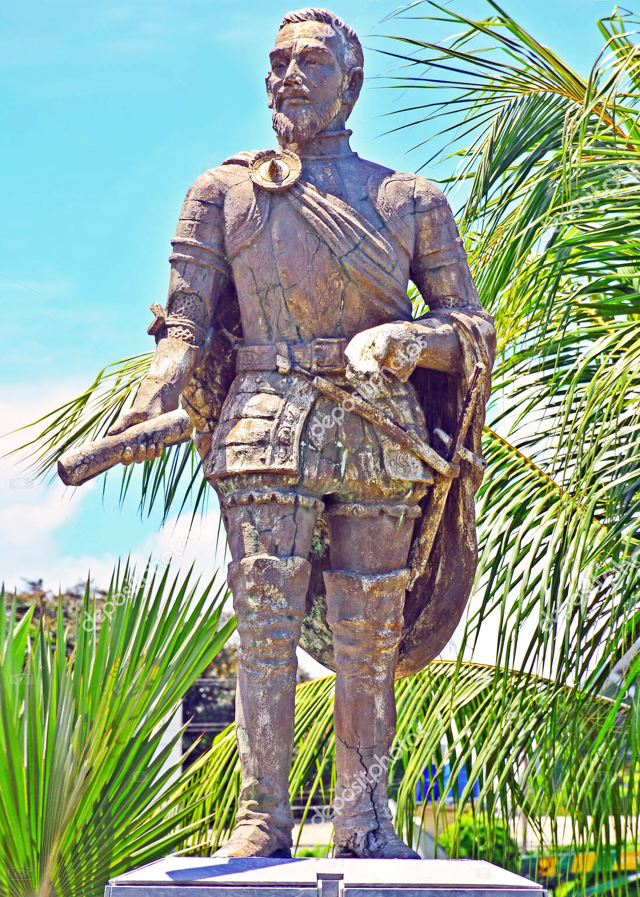
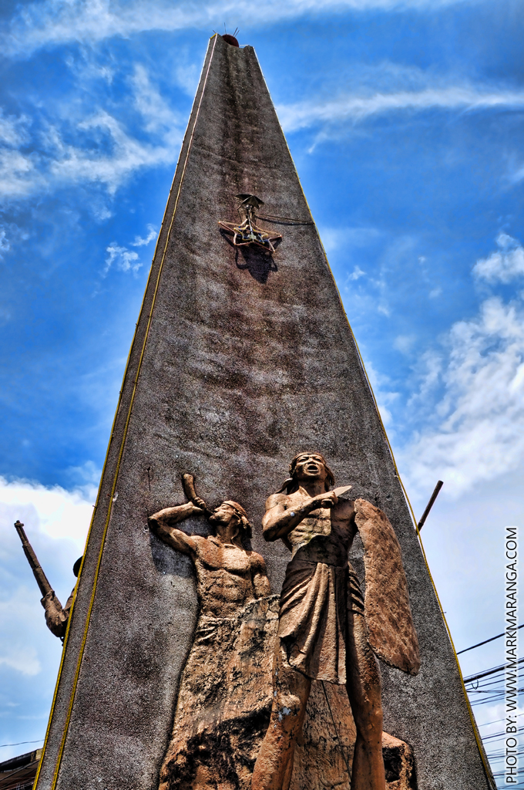
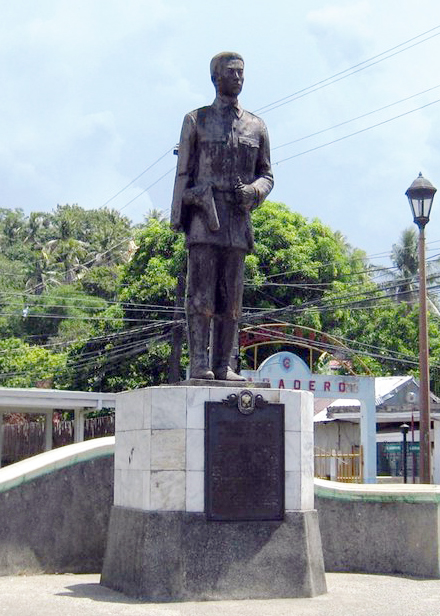
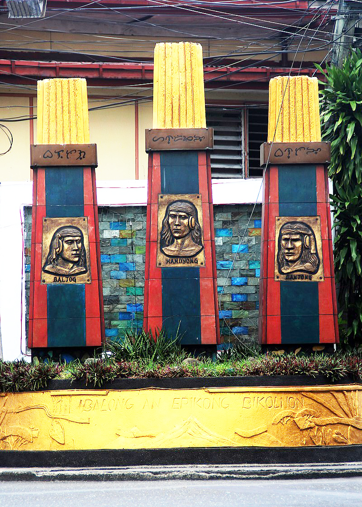
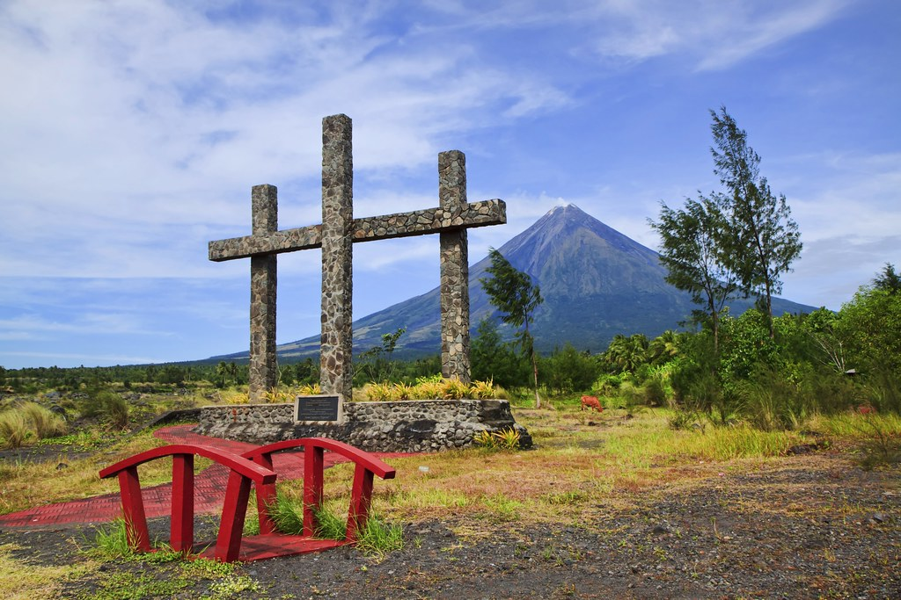
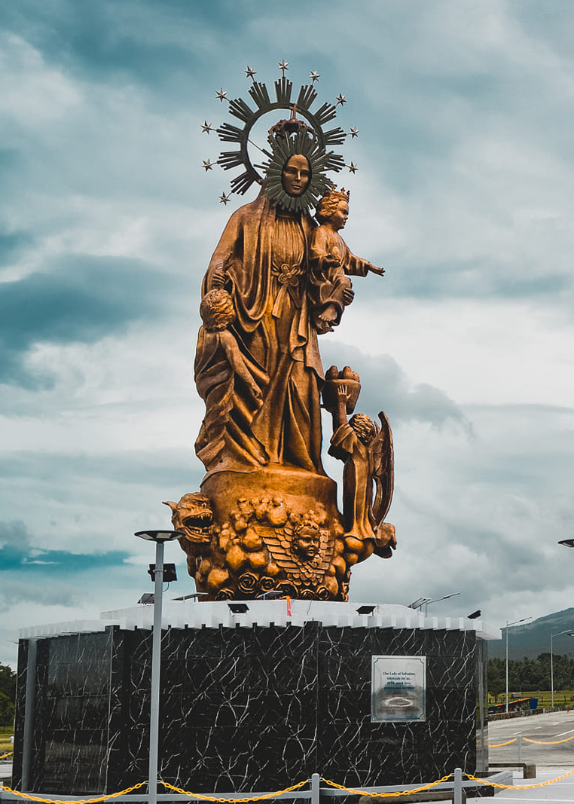
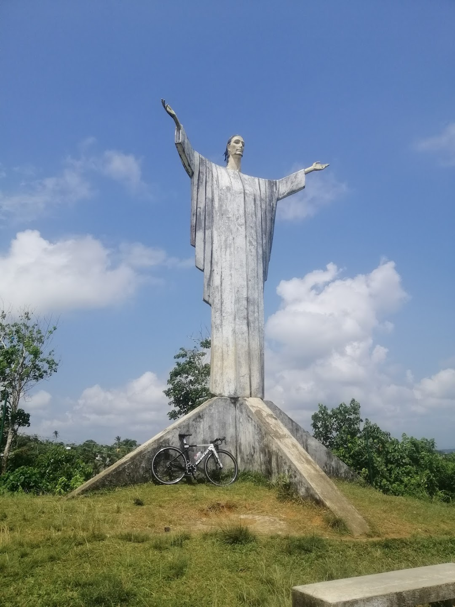

TOURIST ATTRACTION
NATURAL
MAYON VOLCANO

The world's most perfect cone volcano. the volcano stands at an elevation of 8,189 feet from a brode base of about 10kms. Up to 50kms. It has a crater measuring a half kilometer in diameter.
LIGÑON HILL

Experience ligñon Hill with its breathtaking 360-degree view of the city at its famous view deck on the hill top.
KAPUNTUKAN HILL

Be amazed at the sight of the Kapuntukan Hill which got its title “Sleeping Lion” from its unusual lion-like form and contour.
16 DIVE SITES

Located within the territorial waters of Albay Gulf at the eastern seaboard of the province. It is rich in marine resources such as rare sea creatures and countless numbers of colorful corals.
HISTORICAL
HISTORICAL
MIGUEL LOPEZ DE LEGAZPI MONUMENT

Also known as El Adelantado and El Viejo (The Elder). was a Basque-Spanish navigator and governor who established the first Spanish settlement in the East Indies when his expedition crossed the Pacific Ocean.
MIGUEL LOPEZ DE LEGAZPI MONUMENT
It is a memorial to the valiant defense of Albayanos against American invaders in 1900.
HEADLESS MONUMENT

Constructed as a dedication to the unknown heroes who died and shed their blood during the Japanese military occupation in Legazpi City.
GENERAL IGNACIO PAUA MONUMENT
The only pure-blooded Chinese general who supported the Katipuneros in the fight against the Spaniards.
IBALONG HEROES MONUMENT
An honor of Ibalong mythical, Baltog, Handyong and Bantong.
PADANG MEMORIAL SHRINE
Repository shrine in memory of the residents of Padang who killed of Typhoon Reming.
ALBAY GULF LANDING COMMEMORATIVE PYLON

Built in 1995 in connection with the 50th Anniversary of the Landing of the Allied American Forces in Legazpi City, which led to the City's liberation from the Japanese occupation forces.
RELIGIOUS
HOMERELIGIOUS
The Cathedral of St. Gregory the Great, is the Episcopal Seat of the Diocese of Legazpi.The current bishop of the Diocese of Legazpi is Bishop Joel Z. Baylon.
ST.RAPHAEL CHURCH

The Church of Legazpi or Saint Raphael Church, it is a place of prayer, meditation and pilgrimage to many visitors each year.
NUESTRA SRA. DE SALVACION

The new Monument of Nuestra Señora de Salvación in Legazpi City located along the rotunda of Bgy Dita, Pawa and Tamaoyan, sculptured by Mr. Toi Napay, has a height of 15 meters (49 feet) or equivalent to a 5-storey tall building.
RISEN CHRIST

Risen Christ Strategically located at Resettlement Site Banquerohan Legazpi City.